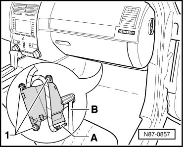

Air Door: Service and Repair
Fresh/Recirculating Air Door Motor
Removing
- Remove footwell trim on front passenger side.
- Disconnect harness connector - A - from positioning motor.

- Remove bolts - 1 -.
- Unclip actuator - B -.
- Remove control motor.
Installing
Installation is carried out in the reverse order, when doing this note the following:
- Initiate the basic setting function with the Vehicle Diagnosis, Testing And Information System (VAS 5051B).